Inhalt Index DeskTop Bronstein

 Computeralgebrasysteme Anwendungen von Computeralgebrasystemen Lösung von Gleichungen und Gleichungssystemen Mathematica
Computeralgebrasysteme Anwendungen von Computeralgebrasystemen Lösung von Gleichungen und Gleichungssystemen Mathematica


Mathematica ermöglicht die Manipulation und Lösung von Gleichungen in einem breiten Rahmen. Eine Gleichung wird in Mathematica als logischer Ausdruck aufgefaßt. Wenn man schreibt
| 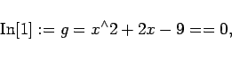 | (20.60a) |
so interpretiert Mathematica dies als die Aufstellung einer Identität. Gibt man
| 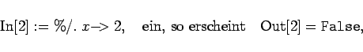 | (20.60b) |
weil mit diesem Wert von x linke und rechte Seite nicht identisch sind.
Die Anweisung 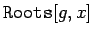 veranlaßt, die obige Identität in eine Form zu bringen, die x explizit enthält. Mathematica stellt das Ergebnis mit Hilfe des logischen ODER wieder in der Form einer logischen Aussage dar:
| 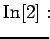 | = | 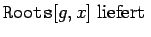 | |
| 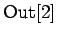 | = | 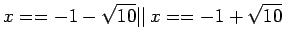 | (20.60c) |
Mit der Operation 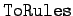 können nachfolgend Gleichungen des logischen Typs wie oben in Transformationsregeln umgewandelt werden. So ergibt
| 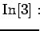 | = | 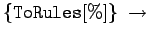 | |
| 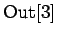 | = | 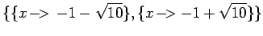 | (20.60d) |